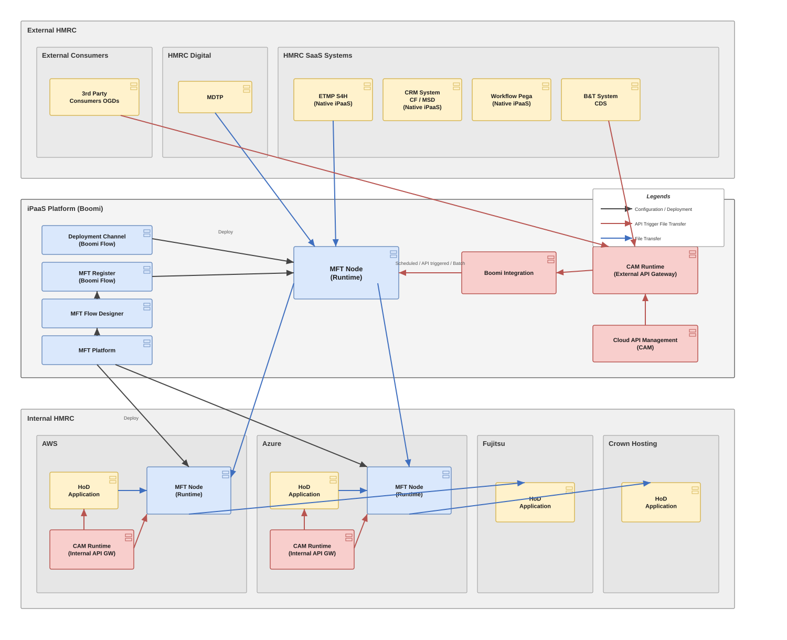

{kind=link}
How to use this page
- This page is the single-source explanation of MFT and its capabilities for the target integration estate. It mirrors the Word document exactly — both are generated from one shared content file so they never drift.
- Use the sticky download bar at the very top to pull the deliverables: the formal Word document, the editable draw.io architecture, the SVG render, or the full zip bundle.
- The Word document is the governance-grade version (cover, contents, page numbering) and is the artefact to circulate for review or sign-off.
- To edit the diagram, open the
.drawiofile at app.diagrams.net (File → Open) — it is a single-canvas source. - Read top to bottom for the full picture, or jump to §6 Core Capabilities for the capability detail, or §9 Capability Matrix for the at-a-glance summary.
1. Purpose & Scope
This document explains Managed File Transfer (MFT) as delivered on the Boomi iPaaS platform, and sets out its capabilities in the context of the target integration estate shown in the reference architecture. It is written for solution architects, platform engineers, onboarding leads and delivery governance. It describes what MFT is, how the runtime is distributed across cloud and hosting zones, the transfer and trigger models it supports, and the security, reliability and operational capabilities that make it fit for a government tax authority estate. The architecture is deliberately config-driven: one generic MFT engine services every approved interface as a configuration record, rather than a new build per interface.
2. Executive Summary
- MFT is the governed, secure, auditable movement of files between the department's systems, its SaaS platforms, its internal Heads-of-Duty (HoD) applications, and external consumers — orchestrated centrally on Boomi and executed by distributed MFT runtime nodes placed close to the data in each zone (AWS, Azure, Fujitsu, Crown Hosting and the iPaaS platform).
- The platform separates a control plane (design, registration, deployment and platform management, delivered through Boomi Flow) from a data plane (the MFT runtime nodes that actually move bytes), so that onboarding a new transfer is a configuration exercise, not a development one.
- Three interaction styles are supported and shown in the reference architecture: straight file transfer, API-triggered file transfer via the Cloud API Management (CAM) gateways, and scheduled / batch execution — all served by the same engine.
- Because every interface is a configuration row against a single generic engine, the estate scales by data (more rows) rather than by components (more builds), which is the core 'config over construction' principle that must be protected as the catalogue of transfers grows.
3. What Managed File Transfer Is
Managed File Transfer is the disciplined alternative to ad-hoc scripts, scheduled FTP jobs and point-to-point batch interfaces. Where legacy file movement is typically bespoke per interface — its own script, its own credentials, its own error handling and its own (often absent) audit trail — MFT provides a single managed capability with consistent security, monitoring, delivery guarantees and governance applied uniformly to every transfer.
| Dimension | What it means in this estate |
|---|---|
| Managed | Every transfer is defined, approved and registered before it runs. There is a system of record for who sends what, to whom, when, over which protocol, and under which security controls. |
| Secure | Encryption in transit (and, where required, at rest), strong authentication, and message-level protection (e.g. PGP) are applied by the platform rather than reinvented per interface. |
| Reliable | Transfers are tracked end to end with retry, checkpoint/restart and delivery confirmation, so a partial or failed transfer is detected and recovered rather than silently lost. |
| Auditable | A complete, tamper-evident record of every transfer supports operational triage, non-repudiation and the evidentiary needs of a tax authority. |
| Governed | Onboarding, change and decommissioning follow a controlled lifecycle, with the transfer catalogue as the authoritative inventory of live interfaces. |
4. Architecture Overview
The reference architecture places MFT across three zones. The control plane and a central runtime sit on the Boomi iPaaS platform; the data plane extends into the internal hosting estate so files are handled close to source and target.
- External Zone — External-facing systems and consumers: third-party / Other Government Department (OGD) consumers, the department's digital tax platform (MDTP), and the SaaS line-of-business systems (ETMP S4H, the CRM/Case system, the Pega workflow platform and the B&T/CDS system). Several of these run their own native iPaaS.
- iPaaS Platform (Boomi) — The integration control plane and the central data-plane runtime. It hosts the MFT control-plane services (Deployment Channel, MFT Register, MFT Flow Designer, MFT Platform), a central MFT runtime node, the Boomi Integration processes, and the external Cloud API Management (CAM) gateway.
- Internal Zone — The department's internal hosting estate — AWS, Azure, Fujitsu and Crown Hosting — where the Heads-of-Duty (HoD) applications live. AWS and Azure each host their own MFT runtime node and an internal CAM gateway so that files are processed close to the data.

Figure 1 — MFT deployment / topology reference architecture. Editable source: mft-architecture.drawio.
5. Component Reference
Each element of the reference architecture and the role it plays in the MFT capability:
| Component | Plane | Role |
|---|---|---|
| MFT Platform | Control plane | The management surface for the MFT capability: it governs configuration, publishes runtime artefacts to the nodes, and is the anchor for platform administration, environments and access. It is the point from which the generic engine and its configuration are deployed to each node. |
| MFT Flow Designer | Control plane | The design-time tool where transfer flows are modelled — source and destination endpoints, protocol, scheduling, transformation and routing — as configuration rather than hand-written integration components. |
| MFT Register (Boomi Flow) | Control plane | The registration / onboarding surface. Each approved interface is captured here as a configuration record (the 'row') that the generic engine consumes. This is the authoritative catalogue of live transfers. |
| Deployment Channel (Boomi Flow) | Control plane | The controlled path by which registered configuration and runtime artefacts are promoted and deployed out to the MFT runtime nodes across zones. |
| MFT Node (Runtime) | Data plane | The execution engine. One or more runtime nodes actually move the files. A central node sits on the iPaaS platform; additional nodes sit inside AWS and Azure so that data is handled close to source/target. Every node runs the same generic engine and is driven by configuration. |
| Boomi Integration | Data plane | The Boomi integration processes that mediate, transform and route where a transfer needs enrichment, format change or orchestration beyond a straight move — including the bridge from an API trigger to a file transfer. |
| CAM Runtime — External API Gateway | API plane | The external Cloud API Management gateway. It exposes and secures the APIs that external consumers and SaaS systems call, including the API calls that trigger a file transfer. |
| CAM Runtime — Internal API Gateway | API plane | The internal CAM gateways (in AWS and Azure) that expose and secure APIs to internal HoD applications, including API-triggered transfers originating inside the estate. |
| Cloud API Management (CAM) | API plane | The API management capability that governs, secures and monitors the API estate that fronts and triggers transfers (policies, keys, throttling, observability). |
| HoD Application | Endpoint | A Head-of-Duty business application (e.g. hosted in AWS, Azure, Fujitsu or Crown Hosting) that is a source or destination of files. It exchanges files with its local MFT node and can trigger or receive API-driven transfers via the internal gateway. |
| ETMP / CRM / Pega / B&T (CDS) | Endpoint (SaaS) | External SaaS line-of-business systems that exchange files with the central MFT node and, in several cases, run their own native iPaaS. They are sources and destinations in the transfer catalogue. |
| MDTP | Endpoint (Digital) | The department's digital tax platform, exchanging files with the central MFT node. |
| 3rd Party Consumers (OGDs) | Endpoint (External) | External consumers and Other Government Departments that receive files or trigger transfers through the external CAM gateway. |
6. Core MFT Capabilities
Secure transport & protocol coverage
A single engine terminates and originates the file-transfer protocols the estate needs — typically SFTP, FTPS and HTTPS, with partner-facing options such as AS2 where non-repudiation of receipt is required. Transport is encrypted by default. Rather than each interface implementing its own protocol handling and key management, the node provides these as platform services, configured per interface. This removes a large class of bespoke, hard-to-audit connection code from the estate.
Managed & governed transfers (control plane)
The control plane (MFT Platform, Flow Designer, Register and Deployment Channel) enforces that a transfer is designed, registered and deployed through a controlled path before it can run. The MFT Register is the authoritative inventory of live interfaces, giving governance a single place to see every transfer, its owner, its endpoints and its controls, and a controlled lifecycle for onboarding, change and decommissioning.
Config over construction (one generic engine)
The defining capability of this design: there is one generic MFT engine process, and each approved interface is a configuration record consumed by that engine — never a new Boomi component per interface. Adding a transfer means adding a row, not writing and deploying a new build. This keeps the component footprint flat as the catalogue grows, collapses the test and release surface, and makes the estate auditable by inspecting configuration rather than reverse-engineering code. It is treated as an inviolable architectural constraint and must be actively defended against features that would tempt a per-interface build.
Distributed, multi-cloud runtime topology
Runtime nodes are placed where the data is: a central node on the iPaaS platform for hub traffic, and dedicated nodes inside AWS and Azure for the internal estate, with Fujitsu and Crown Hosting endpoints served across the internal fabric. This keeps large file movements close to source and target, reduces unnecessary data egress, respects data-residency and network-zone boundaries, and allows each zone to scale independently. All nodes run the same engine and configuration, so the behaviour is uniform wherever a transfer executes.
Trigger & orchestration models
The same engine supports multiple ways to initiate a transfer, shown in the architecture as 'Scheduled / API triggered / Batch': time-based schedules for recurring batch windows; API-triggered transfers where a consumer calls an API through a CAM gateway and the platform initiates the corresponding file movement; event/arrival-driven pickup where a file landing in a watched location starts the flow; and on-demand batch. This lets a single catalogue serve real-time, near-real-time and bulk file exchange without separate tooling.
API-triggered file transfer (CAM integration)
Files and APIs are not separate worlds here. External consumers and SaaS systems call APIs published on the external CAM gateway; internal HoD applications call APIs on the internal CAM gateways. Boomi Integration bridges an API call to a governed file transfer on the MFT node. This gives consumers a modern, secured, throttled API entry point while the heavy lifting of moving the file is still done by the managed engine — combining API governance (keys, policy, observability) with MFT delivery assurance.
Reliability & delivery assurance
Transfers are tracked as first-class objects with automatic retry, checkpoint/restart for large files, and explicit delivery confirmation. A failed or partial transfer is detected and recoverable rather than silently lost, and duplicate protection prevents re-processing. This turns 'the file didn't arrive' from an untraceable incident into a diagnosable, recoverable event.
Security & compliance
Security is applied by the platform, not per script: encryption in transit (and at rest where required), strong endpoint authentication (keys, certificates, credentials held in managed stores), optional message-level protection such as PGP, and network-zone segregation between external, iPaaS and internal fabrics. Combined with the complete audit trail, this supports the confidentiality, integrity and non-repudiation expectations of a tax authority and its OFFICIAL data.
Self-service onboarding & registration
New interfaces are onboarded through the MFT Register as configuration, which is the foundation for self-service provisioning: an approved request becomes a catalogue row and is deployed via the Deployment Channel to the relevant node(s). This is the capability the Intelligrator provisioning portal builds on — turning onboarding from an engineering ticket into a governed, config-driven request.
Observability, audit & operations
Every transfer emits a consistent operational record — status, timings, volumes, endpoints, outcome — feeding monitoring, alerting and the audit inventory. Because all nodes and interfaces behave identically, operations teams have one operating model across the whole estate rather than a patchwork of bespoke jobs, which shortens triage and makes SLAs measurable.
7. Flow Walkthroughs
The legend distinguishes three interaction styles. Each is traced through the reference architecture below.
File Transfer (blue)
A straight, governed move of a file with no API trigger. Example: a SaaS system (e.g. ETMP) or MDTP exchanges a file with the central MFT node; the central node relays to the appropriate internal node (AWS/Azure), which delivers to the target HoD application. The same path serves internal-to-internal and internal-to-external moves. The engine applies protocol, security, retry and audit uniformly.
API Trigger File Transfer (red)
A consumer initiates a transfer by calling an API. An external consumer or SaaS system calls the external CAM gateway (or an internal HoD calls an internal CAM gateway); Boomi Integration receives the trigger and instructs the MFT node to run the corresponding file movement. This is how real-time or on-demand file exchange is exposed as a secured, managed API while delivery is still handled by the MFT engine.
Configuration / Deployment (black)
The control-plane path. The MFT Platform, Flow Designer and Register define and register a transfer as configuration; the Deployment Channel promotes that configuration and the runtime artefacts out to the MFT nodes across the iPaaS platform, AWS and Azure. No business file moves on this path — it is how the generic engine is configured and kept consistent across zones.
8. Mapping Capabilities to “Config over Construction”
| Activity | How it is handled |
|---|---|
| Add a new interface | Insert a configuration row in the MFT Register and deploy — no new component, no release of engine code. |
| Change an endpoint or schedule | Edit the configuration record; the generic engine picks up the change through the Deployment Channel. |
| Scale to a new zone | Stand up another MFT node running the same engine and push the same configuration set to it. |
| Audit the estate | Read the transfer catalogue (configuration), not the code — the inventory is the source of truth. |
| Decommission | Retire the configuration row through the governed lifecycle; nothing bespoke is left behind to clean up. |
9. Capability Summary Matrix
| Capability | What the platform provides | Why it matters |
|---|---|---|
| Secure transport | SFTP / FTPS / HTTPS / AS2, encrypted by default, platform-managed keys | Removes bespoke connection & key code |
| Generic engine | One process, interfaces as configuration rows | Flat component footprint; auditable by config |
| Distributed nodes | Central + AWS + Azure runtime nodes, uniform engine | Data-local processing; zone segregation; independent scaling |
| Trigger models | Scheduled, API-triggered, event/arrival, batch | One catalogue for real-time and bulk |
| API bridge (CAM) | External & internal gateways trigger MFT via Boomi Integration | API governance + MFT delivery assurance |
| Delivery assurance | Retry, checkpoint/restart, confirmation, de-dup | Failures are detected and recoverable |
| Security & compliance | Encryption, strong auth, PGP, zone segregation, full audit | Meets confidentiality/integrity/non-repudiation needs |
| Onboarding | Register-driven, self-service ready (Intelligrator) | Config request, not an engineering build |
| Observability | Uniform per-transfer record; one operating model | Faster triage; measurable SLAs |
10. Design Considerations & Open Decisions
Recorded as decisions with a named owner rather than deferred:
| Consideration | Detail | Suggested owner |
|---|---|---|
| Config-over-construction must be defended, not assumed | Any feature request that implies a per-interface Boomi component (bespoke transformation, one-off routing) is a challenge to the core principle. Route such cases through a generic, configurable mechanism or explicitly record the exception with a named owner. | Integration Architecture |
| Node topology vs. HA cache assumptions | Distributed nodes are correct for data-locality, but any shared state (e.g. dedupe or lookup) must not rely on node-local caching in a clustered/HA node — a DB-backed store with TTL and event-driven invalidation is preferred. Confirm which node functions require shared state. | Platform Engineering |
| API-trigger boundary | The line between 'API that triggers a transfer' and 'API that moves the payload' must stay crisp so that large payloads always land on the MFT engine, not through the API tier. Confirm payload-size thresholds and routing rules with a named owner. | Integration Architecture |
| Onboarding self-service scope | Register-driven onboarding is the foundation for Intelligrator; confirm which transfer types are safe for full self-service in early phases versus requiring architectural review. | Product / Governance |
11. Glossary
| Term | Meaning |
|---|---|
| MFT | Managed File Transfer — governed, secure, auditable file movement as a platform capability. |
| iPaaS | Integration Platform as a Service — here, Boomi, hosting both control and runtime. |
| Node (Runtime) | A Boomi runtime that executes the generic MFT engine and moves files in a given zone. |
| CAM | Cloud API Management — the API gateway/management capability (external and internal runtimes). |
| HoD | Head-of-Duty application — a departmental business system that is a source/target of files. |
| Boomi Flow | Boomi's workflow/app capability used here for control-plane surfaces (Register, Deployment Channel). |
| Config over construction | Adding interfaces as configuration rows against one generic engine, never new per-interface builds. |
| OGD | Other Government Department — an external consumer of files/APIs. |
| ETMP / CRM / Pega / B&T (CDS) / MDTP | SaaS and digital line-of-business systems in the external zone. |
Generated from a single shared content source · v1.0 · 22 July 2026 · HTML and Word are kept in sync.